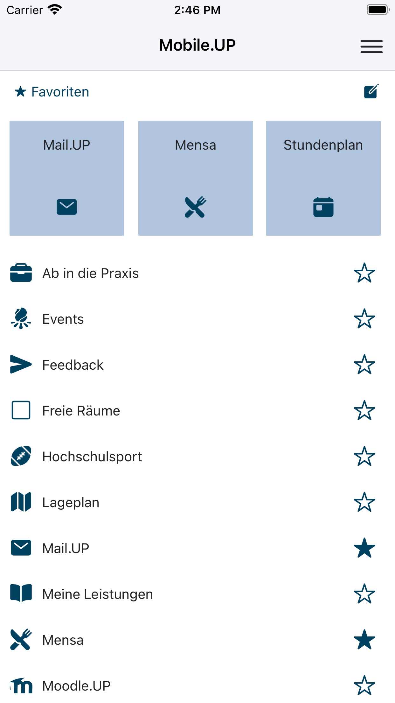

Mobile.UP

Verfügbar für Android und iOS.
Die ganze Uni in deiner Hand: Finde dich auf dem Campus zurecht, habe immer den aktuellsten Speiseplan der Mensen dabei, hole dir Infos aus dem Vorlesungsverzeichnis, schau in deinen Stundenplan, checke deine Leistungen und vieles mehr!
Features:
- aktueller Mensaplan
- deinen Stundenplan direkt aktuell aus PULS
- deine bisherigen Leistungen direkt aus PULS
- das gesamte Vorlesungsverzeichnis
- aktuelle News von AStA, Uni und Co.
- durchsuchbare Öffnungszeiten für Büros, Sekretariate, Bibliotheken, Mensas und mehr
- durchsuchbare Lagepläne der Campusse
- Raumpläne und freie Räume auf den Campussen
- Bus und Bahn von, zu und zwischen den Campussen
- direkter Link zum Hochschulsport
- Notrufnummern direkt zur Hand
- Bibliothekssuche und Personensuche
- Verlinkung von Mail.UP, Moodle.UP, Reflect.UP und dem UNIshop
- aktuelle Stellenangebote
Mobile.UP wird dir mit freundlicher Unterstützung deines AStA der Uni Potsdam präsentiert!
Getting Started
Zum entwickeln wird Node.js benötigt:
##
## Repo Clonen
##
git clone https://github.com/University-of-Potsdam-MM/Mobile.UP.git
##
## Falls nicht vorhanden Ionic installieren
##
npm install -g @ionic/cli
##
## Submodule installieren und aktualisieren
##
git submodule update --init --recursive
##
## Abhängigkeiten mit NPM installieren
##
npm install
##
## Dokumentation erstellen
##
npm run compodoc
##
## Applikation im Browser mit Ionic starten
##
ionic serveWeiterführende Informationen
Demo Version
Dokumentation
Kontakt
Bei Interesse kontaktieren Sie mobileup-service@uni-potsdam.de
CodeClimate

Support from BrowserStack
Lizenz

Mobile.UP von https://github.com/University-of-Potsdam-MM/UP.App/ ist lizenziert unter einer Creative Commons Namensnennung - Nicht-kommerziell - Weitergabe unter gleichen Bedingungen 4.0 International Lizenz.